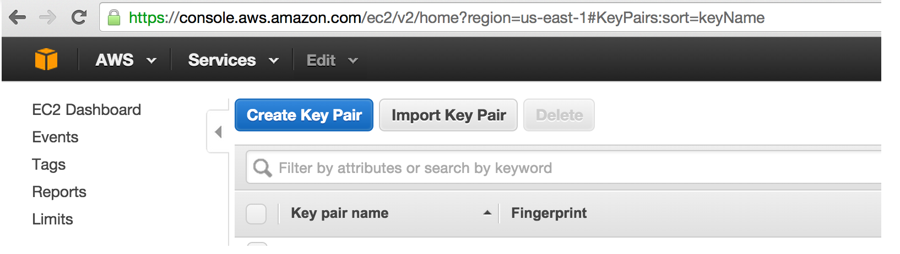

<img style="margin-left:35%;width:30%;" src="Anaconda_Logo_0702.png"></img> # Using Anaconda Cluster <img style="margin-left:60%;margin-top:150px;width:30%;" src="anaconda_cluster_picture.png"></img> --- # Using Anaconda cluster * Preliminaries * Continuum Analytics makes a number of free open-source Python tools that are helpful * One of these is the Anaconda distribution and its <code>conda</code> distribution and environments tool * Install Anaconda cluster with conda <code class="bash"> TOKEN=an-86c64b70-4a1d-416f-a996-470518730baa conda install -c https://conda.anaconda.org/t/$TOKEN/anaconda-cluster anaconda-cluster </code> * All the materials for this presentation can be found at [https://github.com/ContinuumIO/image-analyzer/](https://github.com/ContinuumIO/image-analyzer/) --- </img> # What does Anaconda cluster do? * Start and provision a cluster on your hardware or a cloud provider's * Install big data tools like HDFS, Spark, ipython notebook * Install python dependencies with conda remotely * Help with file transfers and submitting jobs * Provide an easy way to learn and experiment with big data tools like Spark <img style="margin-left:20%;margin-top:0px;width:60%;" src="ARM_support_RPi.jpg"></img --- </img> # Anaconda cluster steps * Set up an [~/.acluster/providers.yaml file like this](http://docs.continuum.io/anaconda-cluster/overview.html#provider-setup). It covers security details. <code> <pre> aws_east: cloud_provider: ec2 secret_id: XXXXXXXXXXXXX secret_key: XXXXXXXXXXXXX keyname: KEY-NAME-ON-AWS private_key: FULL-PATH-LOCAL-KEYFILE location: us-east-1 </pre> </code> * [http://docs.continuum.io/anaconda-cluster/overview#provider-setup](http://docs.continuum.io/anaconda-cluster/overview#provider-setup) --- </img> # Anaconda cluster steps * The providers.yaml is not required if you are connecting to an already started cluster. * Make sure you have downloaded the private_key from your provider and saved it at the location keyname on your local machine. You may need to change permissions on it after downloading. </img> <code class="bash">chmod 0600 ~/path/to/your_keyname</code> --- <img class="logo2" src="anaconda_cluster_logo.png"></img> # Anaconda cluster steps * Set up a [cluster profile](http://docs.continuum.io/anaconda-cluster/overview.html#profile-setup), like this YAML file for a spark cluster. It sets the size of cluster and machine types. <pre> <code> $ cat ~/.acluster/profiles/pyladies_demo_cluster.yaml spark_profile: provider: aws_east num_nodes: 2 node_id: ami-a29943cb node_type: m3.xlarge user: ubuntu plugins: - notebook - spark-yarn </code> </pre> * [http://docs.continuum.io/anaconda-cluster/overview.html#profile-setup](http://docs.continuum.io/anaconda-cluster/overview.html#profile-setup) * Place other cluster profiles in <code>~/.acluster/profiles</code> if you need them. * You do not need a profile YAML if you are just connecting to a cluster that is already started. --- <img class="logo2" src="anaconda_cluster_logo.png"></img> # Anaconda cluster steps * Start cluster <pre> <code class="bash"> acluster create spark-cluster --profile pyladies_demo_cluster </code> * This command creates the cluster configuration YAML file. If you send the cluster config file to coworkers, they can use your cluster without going through the preceding steps. --- </img> # Anaconda cluster steps * At this point, we're ready to use cluster. * Typical workflow may consist of: * Pushing data files and code to nodes * Remote conda installing python dependencies * Remote ssh commands or ssh'ing into machines * Transferring output files from nodes to local machine * Shutting down cluster <img style="margin-left:60%;margin-top:60px;width:20%;" src="anaconda_cluster_picture.png"></img --- <img class="logo2" src="anaconda_cluster_logo.png"></img> # Working with Anaconda cluster * Push a file to all the nodes of cluster <pre><code class="bash"> acluster put some_file.py /tmp/some_file.py --target --all </code></pre> * Push a local directory to the head node but not others <pre><code class="bash"> acluster put ./tmp_data/ /tmp/data --target 0 </code></pre> --- <img class="logo2" src="anaconda_cluster_logo.png"></img> # Working with Anaconda cluster * Get files from specific workers <pre><code class="bash"> acluster get /tmp/some_file.txt some_file_0.txt --target 0 acluster get /tmp/some_file.txt some_file_1.txt --target 1 </code></pre> * Make sure to give them unique names on the destination end so they don't overwrite each other. --- <img class="logo2" src="anaconda_cluster_logo.png"></img> # Working with Anaconda cluster * Conda install python dependencies and list what is installed <pre><code class="bash"> acluster conda install scipy scikit-learn pandas acluster conda list </code></pre> --- <img class="logo2" src="anaconda_cluster_logo.png"></img> # Working with Anaconda cluster * Submit a job for running by Spark master <pre><code class="bash"> acluster submit --stream image_mapper.py </code></pre> --- <img class="logo2" src="anaconda_cluster_logo.png"></img> # Working with Anaconda cluster * Run a remote command on some or all nodes: <pre><code class="bash"> acluster cmd "cd /tmp/my_new_code && python setup.py install" --target --all </code></pre> * Output from each node is piped back --- <img class="logo2" src="anaconda_cluster_logo.png"></img> # Working with Anaconda cluster * Get a list of the clusters running <pre><code class="bash"> acluster list </code></pre> <pre><code> spark-cluster: nodes: \- 54.237.113.188 (head) \- 54.237.86.244 </code></pre> --- <img class="logo2" src="anaconda_cluster_logo.png"></img> # Working with Anaconda cluster * Anaconda cluster sets up the web services associated with hadoop, YARN (scheduler of hadoop) and spark * Get the head node's IP address from <code>acluster list</code> * Hadoop distributed file system browser on port 50070 * YARN cluster scheduler on port 9026 * Ipython notebook on port 8888 --- <img class="logo2" src="anaconda_cluster_logo.png"></img> # Working with Anaconda cluster * During cluster creation, a configuration YAML file like this is written * Sharing this file and private_key allows access to cluster <pre><code class="bash"> cat ~/.acluster/clusters.d/spark-cluster.yaml </code></pre> <pre><code class="bash"> spark-cluster: created_at: '2015-07-23 08:54:05' ids: \- i-393cbed0 \- i-3a3cbed3 machines: compute: \- 54.237.86.244 head: \- 54.237.113.188 private_key: ~/.ssh/psteinberg2.pem profile: spark_profile provider: aws_east user: ubuntu </code></pre> --- <img class="logo2" src="anaconda_cluster_logo.png"></img> # Working with Anaconda cluster * Shutdown the cluster <pre><code class="bash"> acluster destroy spark-cluster </code></pre> <pre><code class="bash"> Are you sure you want to destroy cluster "spark-cluster"? [y/N]: y INFO: Cluster "spark-cluster" destroyed Cluster destroyed </code></pre> --- <img class="logo2" src="anaconda_cluster_logo.png"></img> # Anaconda cluster supports a number of plugins, not just PySpark * Miniconda * Ganglia\* * HDFS * HIVE\* * Impala\* * IPython/Jupyter Notebook * IPython Parallel\* * Salt * Spark Standalone or Yarn * YARN * ZooKeeper \* alpha support --- ## Example Anaconda cluster usage * [https://github.com/ContinuumIO/image-analyzer/blob/master/run_helper.sh](https://github.com/ContinuumIO/image-analyzer/blob/master/run_helper.sh) ## Learning PySpark demo * [https://github.com/ContinuumIO/image-analyzer/blob/master/Getting_Started_with_PySpark.ipynb](https://github.com/ContinuumIO/image-analyzer/blob/master/Getting_Started_with_PySpark.ipynb) ## PySpark image-analysis example ipython notebook * [https://github.com/ContinuumIO/image-analyzer/blob/master/Explore_Spark_Results.ipynb](https://github.com/ContinuumIO/image-analyzer/blob/master/Explore_Spark_Results.ipynb) ## Notebooks are also on nbviewer: * [http://nbviewer.ipython.org/github/continuumio/image-analyzer/tree/master/](http://nbviewer.ipython.org/github/continuumio/image-analyzer/tree/master/)